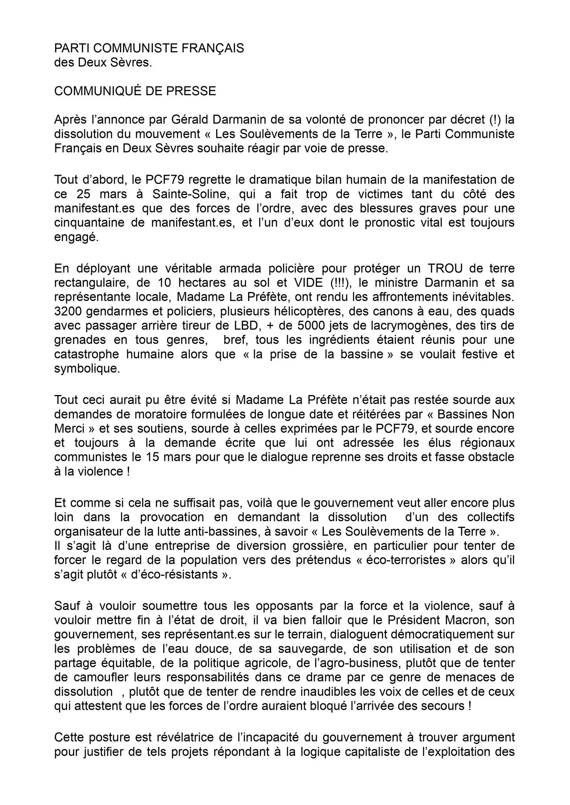
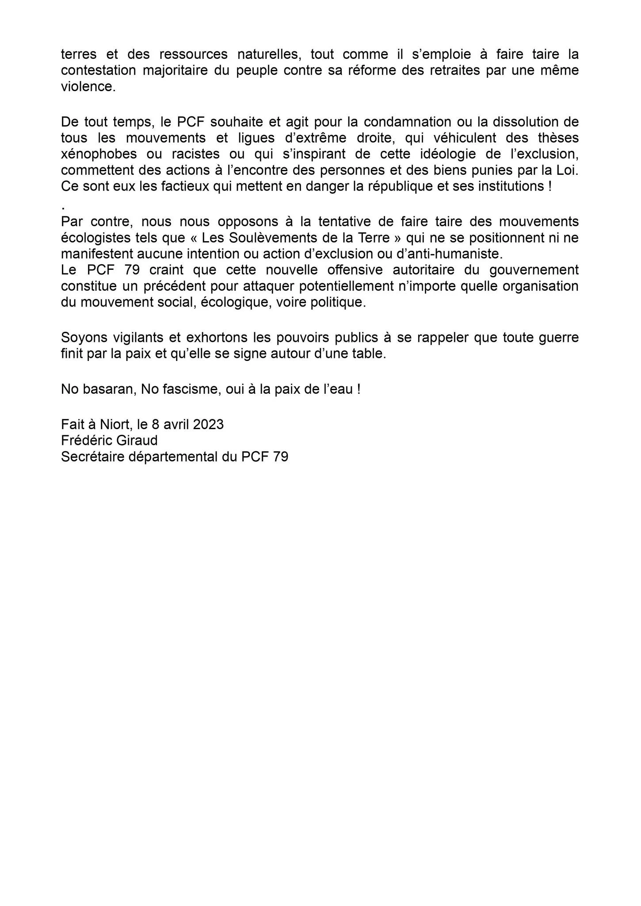

Communiqué de la fédération
Le PCF 79 s’oppose à la dissolution annoncée des Soulèvements de la Terre
Date indiquée par Facebook · 8 avril 2023
Repères éditoriaux
Nous avons réagi en avril 2023 à l’annonce d’une dissolution par le gouvernement. Le communiqué fédéral est consultable dans les pages conservées.
Texte conservé avec la publication
Communiqué de presse de la Fédération des Deux-Sèvres sur l'attitude provocante de monsieur Darmanin et son gouvernement concernant la dissolution des "Soulèvements de la terre".


Sources
Archive rouge · export Facebook · AR-0002-FB-01693
À lire aussi · Une pétition contre l’expulsion de Serhat Gültekin vers la Turquie · Le lien d’origine